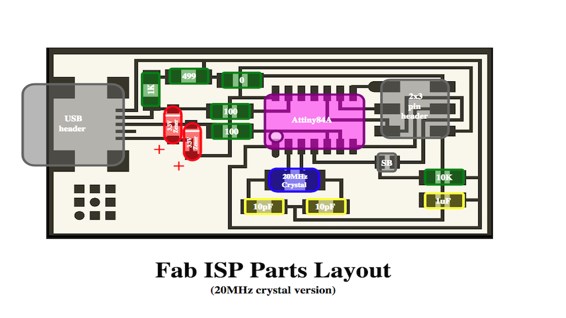
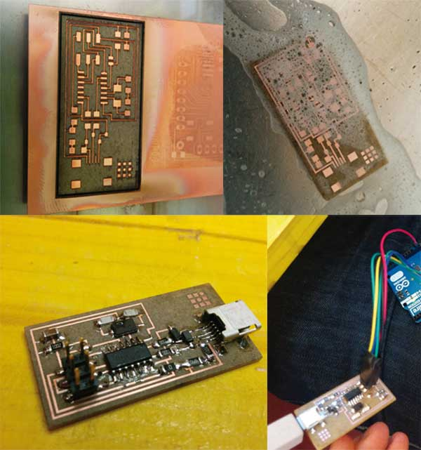

Exercise 4
18.02.2015
Electronic Production
Assignment
- Make the FabISP in-circuit programmer
FabISP
The FabISP is a simple programmer useful to burn bootloader and to
program some Atmel MCU
To make an FabISP I need this BOM:.
- n. 1 ATTiny 44 microcontroller
- n. 1 Capacitor 1uF
- n. 2 Capacitor 10 pF
- n. 2 Resistor 100 ohm
- n. 1 Resistor 499 ohm
- n. 1 Resistor 1K ohm
- n. 1 Resistor 10K
- n. 1 6 pin header
- n. 1 USB connector
- n. 2 jumpers (1 soldering bridge and
1 0 ohm resistor)
- n. 1 Cystal 20MHz
- n. 2 Zener Diode 3.3 V
- n. 1 6 pin connectors
MAKING A FabISP
To make the PCB I used a fiber laser, the technique is showed very
well in the Enrico
Bassi page .
After the engraving I soldered all the components following this
schematic but I used an Attiny44 intead the 84A

Then I programmed the core with an Arduino
Below some pictures of my FabISP
